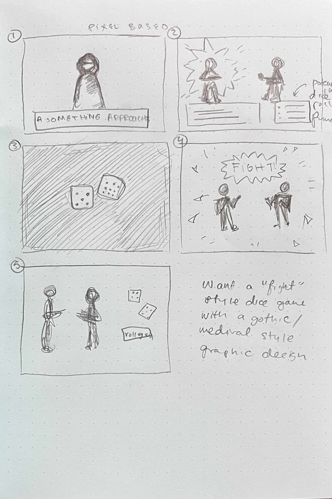
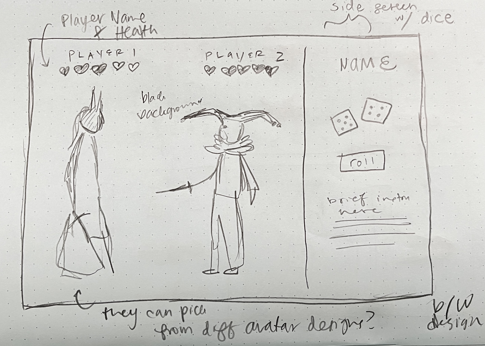
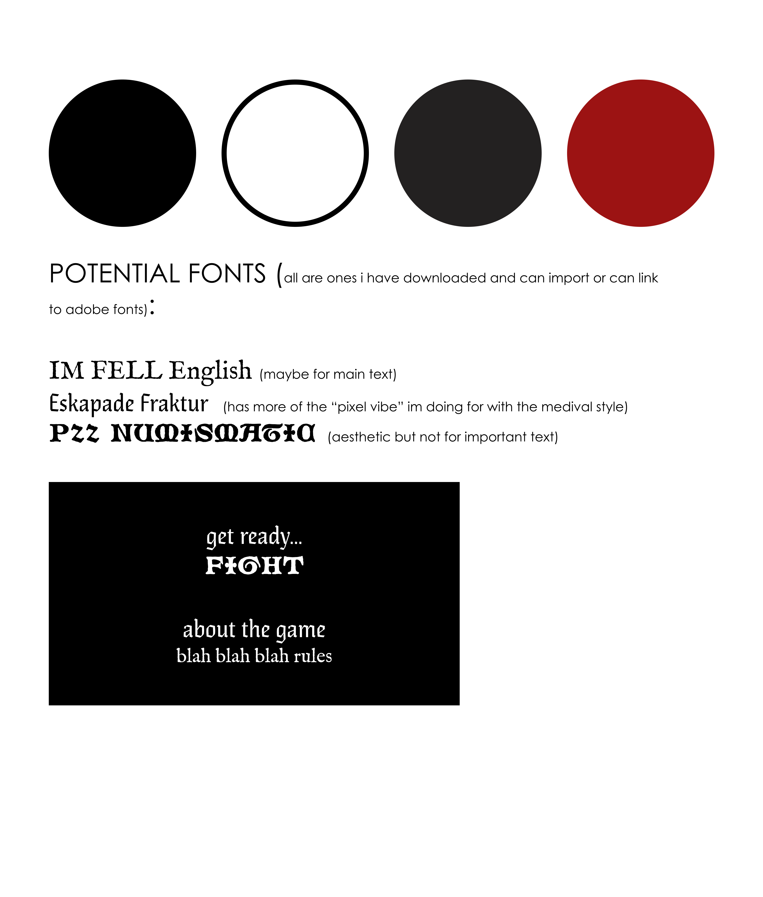

I love games like Omori or Undertale. They're pixel based games that really rely on narrative, simple mechanics, and music to make it more engaging (over fancy graphics). I wanted to make my game mainly inspired by these two games and by my personal graphic design interest that looks like modern gothic/medival with pixel elements. You can see a pinterest board here where i've hoarded some visuals over this year that fit the vibe i'm going for https://www.pinterest.com/pickled_beet/gothic-graphic-design/
here are some thumbnails i made during ideation
here is a sketch of a single panel
here is a design comp/moodboard of the overall aesthetic and layout ideas for the game. It would be mainly black and white but I think based on some of the inspiration from the pinterest board I'd draw some dark grey for shadows and red for a pop. I also have some more medival/old english stlye fonts